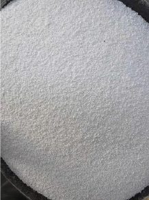

Cát khô công nghiệp cho vữa khô: độ ẩm, mô đun độ lớn và vì sao chúng quyết định chất lượng
Cát chiếm phần lớn khối lượng một bao vữa khô hay keo dán gạch. Hai chỉ số đơn giản – độ ẩm và mô đun độ lớn – quyết định bao vữa có vón cục, có dễ thi công và có đạt cường độ hay không.

Trong một bao vữa khô trộn sẵn hay keo dán gạch, cát thường chiếm phần lớn khối lượng. Xi măng, phụ gia polymer, cellulose ether… chỉ chiếm phần nhỏ nhưng rất nhạy cảm. Vì vậy chất lượng cát không chỉ là chuyện “cát sạch hay bẩn” mà là bài toán kiểm soát độ ẩm, cấp phối hạt và tạp chất.
1. Độ ẩm: kẻ thù thầm lặng của vữa khô
Cát dùng cho vữa trộn ướt tại công trường có thể ẩm vài phần trăm mà không sao. Nhưng với sản phẩm trộn khô đóng bao, nước trong cát sẽ bắt đầu phản ứng với xi măng ngay trong bao: vữa vón cục, đóng tảng, giảm thời gian lưu kho và giảm cường độ khi thi công. Phụ gia bột như RDP hay cellulose ether cũng có thể bị hút ẩm, mất tác dụng.
Thực tế sản xuất, các nhà máy vữa khô thường yêu cầu cát có độ ẩm dưới 0,5%. Để đạt được, cát phải đi qua lò sấy (thường là lồng sấy quay), sau đó được làm nguội và lưu trong silo hoặc bao Jumbo có lót chống ẩm.
2. Mô đun độ lớn (FM): một con số tóm tắt cả đường cấp phối
Mô đun độ lớn được tính bằng tổng phần trăm lượng sót tích lũy trên bộ sàng tiêu chuẩn chia cho 100. FM càng nhỏ, cát càng mịn. Trong vữa khô, người ta thường tách cát thành nhiều cỡ để phối trộn theo công thức:
- Cát mịn (FM khoảng 1,5): cho vữa tô hoàn thiện, bột trét gốc xi măng, keo dán gạch – cần bề mặt mịn, dễ cán.
- Cát trung (FM khoảng 2,0–2,5): cho vữa xây, vữa tô lót, vữa tự san phẳng lớp dày – cần khung hạt chắc, ít co ngót.
Điều quan trọng không chỉ là con số FM mà là sự ổn định giữa các lô. Cát có FM dao động sẽ làm lượng nước trộn, độ dẻo và độ bám dính của vữa thay đổi – khách hàng sẽ cảm nhận ngay ngoài công trường.
3. Tạp chất: bùn, sét và muối
Hàm lượng bùn, bụi, sét cao làm tăng lượng nước yêu cầu, giảm bám dính và gây nứt chân chim. Cát nhiễm muối (cát biển, cát cửa sông chưa rửa) có nguy cơ gây ăn mòn cốt thép và loang muối trên bề mặt. Với cốt liệu cho bê tông và vữa, các chỉ tiêu này được quy định trong TCVN 7570:2006; nhà sản xuất vữa khô thường đặt ngưỡng nội bộ khắt khe hơn.
4. Quy trình chuẩn của một dây chuyền cát khô
- Tiếp nhận cát ướt, lọc tạp chất thô (rác, sỏi lớn).
- Sấy trong lồng sấy quay đến độ ẩm mục tiêu.
- Lọc bụi bằng hệ thống túi lọc xung để giữ môi trường và thu hồi hạt mịn.
- Sàng rung phân loại thành các cỡ hạt theo đơn hàng.
- Đóng bao Jumbo hoặc bao nhỏ, lưu kho khô ráo; ghi nhãn lô để truy xuất.
Kết luận
Với nhà máy vữa khô, chi phí cho cát khô đạt chuẩn thường nhỏ hơn rất nhiều so với chi phí khiếu nại, đổi trả do vữa vón cục hay kém bám dính. Một nguồn cát khô ổn định về độ ẩm và cấp phối là nền móng cho mọi công thức tốt.
Nguồn tham khảo
- TCVN 7570:2006 – Cốt liệu cho bê tông và vữa – Yêu cầu kỹ thuật